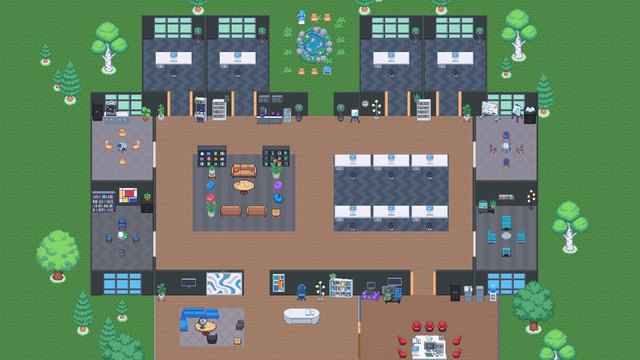
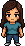
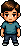
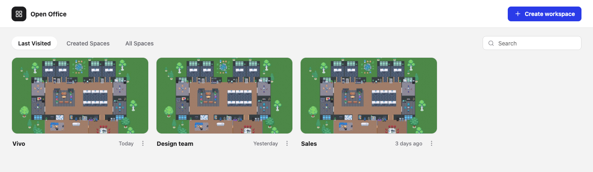
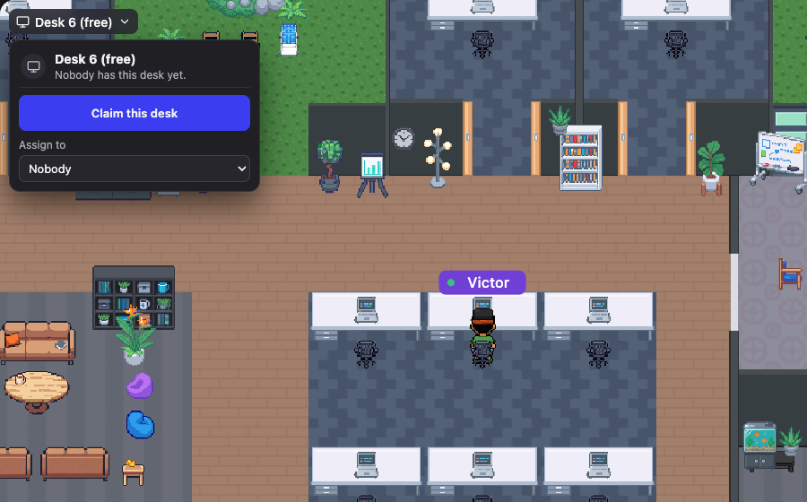
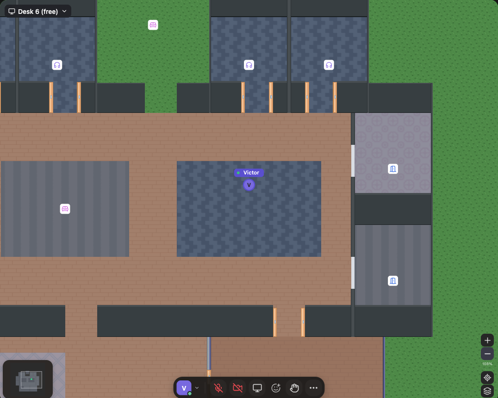
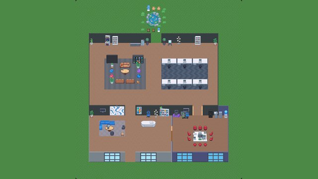
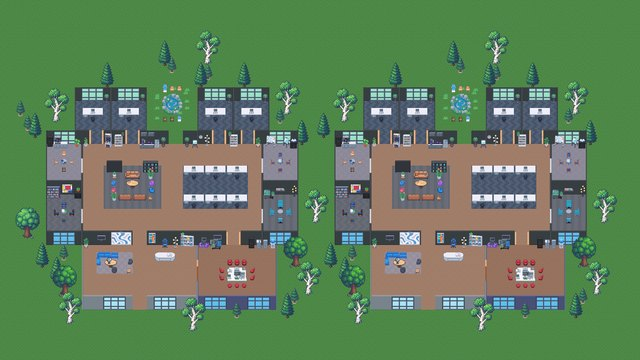

A virtual office your team can actually walk into.Una oficina virtual en la que tu equipo puede entrar de verdad.
Move around a cosy pixel-art office, talk to whoever is next to you, sit at your desk and close the door for a meeting. No subscriptions, no seat limits, no vendor. Run it on your own server, in any country and any language.Muévete por una acogedora oficina en pixel art, habla con quien tengas al lado, siéntate en tu escritorio y cierra la puerta para reunirte. Sin suscripciones, sin límite de puestos y sin depender de nadie. Ejecútalo en tu propio servidor, en cualquier país y en cualquier idioma.
Your office, your data, your server.Tu oficina, tus datos, tu servidor.


Ana
LeoWalk up to a colleague and you hear each other. Walk away and you don't.
Acércate a un compañero y os oís. Aléjate y dejáis de oíros.
MIT licence and original art: use it, fork it, ship it, teach with it.
Licencia MIT y arte original: úsalo, modifícalo, publícalo y enseña con él.
One Node process and static files. Docker, HTTPS and a TURN relay included.
Un proceso de Node y archivos estáticos. Incluye Docker, HTTPS y un relé TURN.
English and Spanish today, ready for more. Works in any modern browser.
Inglés y español hoy, listo para más. Funciona en cualquier navegador moderno.
Everything a team needs to feel togetherTodo lo que un equipo necesita para sentirse cerca
Spaces for every team
Espacios para cada equipo
Create as many workspaces as you like, each with its own name, map, people, chat, calendar and desks.
Crea todos los espacios que quieras, cada uno con su nombre, su mapa, sus personas, su chat, su calendario y sus escritorios.
- A shared list of every space on your server
- See who is inside right now
- Rename or delete spaces from the dashboard
- Una lista compartida de todos los espacios de tu servidor
- Mira quién está dentro ahora
- Renombra o elimina espacios desde el panel

Desks and focus rooms
Escritorios y oficinas de concentración
Walk into a desk to claim it or give it to a teammate, and press ⌘ / Ctrl D to sit back at yours. Private offices switch you to Do not disturb and close the door: others knock, you let them in.
Entra a un escritorio para reclamarlo o dárselo a un compañero, y pulsa ⌘ / Ctrl D para volver al tuyo. Las oficinas privadas te ponen en «No molestar» y cierran la puerta: los demás tocan y tú les dejas pasar.

Meetings that just work
Reuniones que funcionan solas
Step into a meeting room and the doors close. Camera, microphone and screen sharing over WebRTC, an optional LiveKit media server for large meetings, music for everyone, recording, reactions and a raised hand.
Entra a una sala de reuniones y se cierran las puertas. Cámara, micrófono y pantalla compartida con WebRTC, un servidor de medios LiveKit opcional para reuniones grandes, música para todos, grabación, reacciones y mano levantada.
Zoom out with the wheel and the office turns into a clean overview of rooms and people.
Aléjate con la rueda y la oficina pasa a una vista limpia de salas y personas.

From a small studio to a campusDesde un estudio pequeño hasta un campus
Pick a map when you create a space. Every one is fully furnished and you can redecorate anything with the built-in editor.Elige un mapa al crear un espacio. Todos vienen amueblados y puedes redecorar lo que quieras con el editor integrado.

Lobby, a team area with six desks, one meeting room, kitchen and a koi pond.
Vestíbulo, zona de equipo con seis escritorios, una sala de reuniones, cocina y un estanque.
Ten desks, five meeting rooms, four focus offices, a lounge and a garden.
Diez escritorios, cinco salas de reunión, cuatro oficinas de concentración, sala de estar y jardín.

Two buildings side by side: twenty desks, ten meeting rooms and eight focus offices.
Dos edificios lado a lado: veinte escritorios, diez salas de reunión y ocho oficinas de concentración.
Built in, not bolted onIntegrado, no añadido
- Chat channels and DMsCanales y mensajes directos#general, your own channels, mentions and formatting.#general, tus propios canales, menciones y formato.
- Shared calendarCalendario compartidoSchedule a meeting in a room; Join walks you there.Programa una reunión en una sala; Unirse te lleva allí.
- DecoratorDecoradorEighty objects by category, free placement, undo and redo.Ochenta objetos por categoría, colocación libre, deshacer y rehacer.
- Your avatarTu avatarTwo bodies, colours, glasses, hats, headphones and facial hair.Dos cuerpos, colores, gafas, sombreros, auriculares y vello facial.
- Personal accountsCuentas personalesOptional email and password, or just a name and an invite link.Correo y contraseña opcionales, o solo un nombre y un enlace de invitación.
- Footsteps and soundPasos y sonidoFootsteps that change with the floor, with their own volume.Pasos que cambian según el suelo, con su propio volumen.
Your office in two minutesTu oficina en dos minutos
Run it on your computer to try it, then put it on any server with Docker. The deployment guide covers HTTPS, invite keys, admins and TURN.
Pruébala en tu computador y luego súbela a cualquier servidor con Docker. La guía de despliegue explica HTTPS, claves de invitación, administradores y TURN.
# try it locallypruébala en local git clone https://github.com/VictorSandovalDev/OpenOfficeForAll cd OpenOfficeForAll npm install npm run dev # openabre http://127.0.0.1:5173